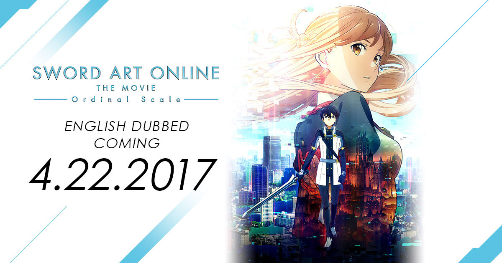

MANGA
MANGASword Art Online Ordinal Scale, Vol. 1.
VIEW PRODUCT →Augmented reality changes the rules.

Ordinal Scale takes Sword Art Online into a world where the danger is no longer hidden behind a full-dive headset. Augma turns augmented reality into a public spectacle, allowing players to battle in familiar streets while rankings, rewards, and memories become part of everyday life. The premise gives the film a bright, accessible surface, but its real interest lies in what happens when technology begins to edit the way people remember their own past.
Kirito initially distrusts the new system because augmented reality cannot reproduce the intensity of full-dive combat. That scepticism creates a useful contrast with Asuna and the rest of the group, who are more willing to explore the new format. As the incidents around the mysterious boss battles grow more serious, the film connects entertainment, commercial technology, and personal memory in a way that feels recognisably different from the earlier death-game arcs.
Asuna receives some of the film’s most important emotional material. Her memories of Aincrad are not just background information; they are part of how she understands herself and her relationship with Kirito. When those memories become vulnerable, the threat feels personal rather than merely technical. Her determination gives the story a strong emotional spine, while Kirito’s role becomes one of support, investigation, and partnership.
Ordinal Scale works as a mystery because the technology’s convenience makes it easy to trust. Players gather in public spaces, compete for rankings, and accept the system’s rewards before asking who designed the experience and why certain memories are being targeted. The film’s explanation moves quickly, but the central idea is compelling: a device that overlays information onto reality can also change which parts of reality people are willing to see.
The movie’s strongest theme is the relationship between memory and identity. Aincrad survivors carry experiences that outsiders may never fully understand, and the Augma creates a new way for those experiences to be manipulated. The action is colourful and fast, but the emotional stakes come from the characters’ fear that their history can be taken away or rewritten. That gives the film a distinct place in the Sword Art Online timeline.
Ordinal Scale is a more contained Sword Art Online story with a clear cinematic hook. Its augmented-reality battles give the franchise a new visual playground, while its focus on Asuna, Kirito, and the memory of Aincrad supplies the emotional reason to care. It is an entertaining bridge between major arcs and a reminder that the series’ deepest conflicts are often about what people remember after the game ends.
Ordinal Scale manga volumes and story material for collectors of the film’s world.
MANGASword Art Online Ordinal Scale, Vol. 1.
VIEW PRODUCT → MANGA
MANGASword Art Online Ordinal Scale, Vol. 2.
VIEW PRODUCT → MANGA
MANGASword Art Online Ordinal Scale, Vol. 3.
VIEW PRODUCT →Open the official Sword Art Online listing →